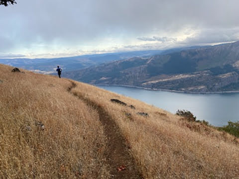
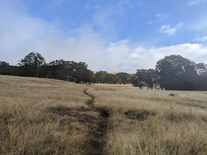
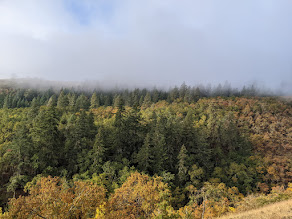
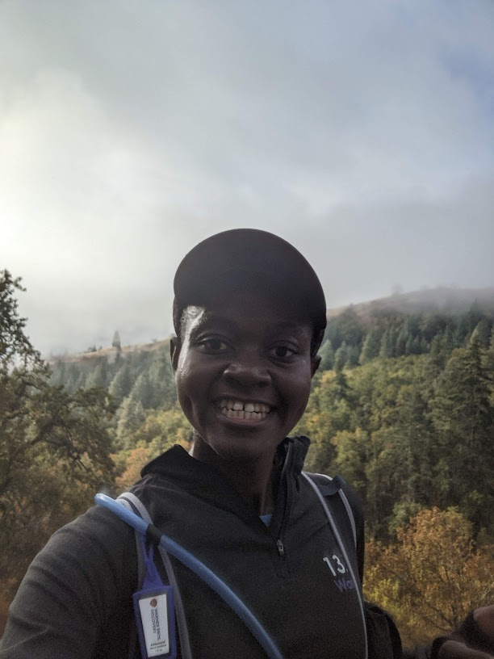

How did I get here? By here I mean practically immobile in the passenger seat of a blue Subaru meandering through a private ranch with 3 folks who until this morning were complete strangers. So much to unpack here: immobile, private ranch, 3 strangers … I assure you I wasn’t kidnapped. No, everything that led me to this point was mostly my own doing. These kind strangers were driving me back to the start line of a race I almost finished but didn’t because I didn’t make the last cutoff, I had ran 95% of the race course that traversed a private ranch, 28.5 miles with 7300ft of elevation to be exact, hence immobile legs. I told you, 100% my own fault; That’s the short answer for how I got here. The real answer though is a long story; one I’d like to share because at the very least T think you’ll find it entertaining.
It all started 10 years ago; No actually I started running earlier than that but only a decade ago, in college, did I start doing it out of my own volition and somewhat consistently. Prior to that, the only sport I ever did was the mandatory jog before class and perhaps the occasional lap or two around our house when I had a good day. Studying engineering at UCT was hectic, but there was still a void to be filled when the mind needed clearing and friends were busy practicing their own extra-curriculars. Running not only filled that void but also improved my health. I settled into a rhythm of “running” 5Ks almost every other day, I say running in quotes because lots of people could easily walk that distance in the same time I ran it. Racing and pace were never in the picture, I was content with what casual running gave me: endorphins, mental clarity, space to introvert and the ability to keep up with friends on hikes. I was excited to have found a sport I could actually do consistently, so I ran happily ever after … or so I wish. Perhaps that would be the happy ending had things stayed that way but we both know how this story ends.

Somewhere along the way running got entangled with stuff, stuff which on the surface seems logical, but in hindsight I now know are terrible ideas. For instance, societal pressure to shrink got to me so it made sense to deprive myself and run myself to exhaustion. Was it wise? Definitely no; we don’t talk enough about eating disorders that follow rapid weight loss. Its one of those things I had to learn the hard way and a whole other blog on its own. You’d think I’d learn my lesson but no I succumbed to the pressure to run races. I’ve always known myself to be slow but that didn’t stop me from comparing myself to others then feeling terrible because pretty much everyone is faster than me. A lot of things I picked up alongside running ended up stealing my joy but I can’t say the same about trail running and by extension ultra running. The act of playing in the woods for hours at a time has not only built my endurance but also helped me cope with the rest of my life. Its why for the past year I’ve been on a streak of 50Ks every month or so, exactly how I ended up in that lift of shame. Normally this is where story ends, but as the title suggests, there is more to be said.

This was my first DNF (Did Not Finish) so of course feelings were involved. A neatly packaged bundle of inadequacy, remorse and grief with a side of sore legs to keep me from running it out. Very few moments had been lower than that; its also these lows that teach us the most. Sure, I was bummed but that race hasn’t changed anything in my running life, except perhaps the races I’ll be signing up for. I think years of mishaps and wrong turns bring about distilled-water level clarity. I’ve recently come to terms with the diagnosis that I have genetic conditions will keep me slow irrespective of how much progress I make. Yet, I’ll still run.
I still run, not to train for races, not to starve myself, not for Strava kudos or meaningless competitions. Don’t get me wrong, they do serve their purpose; food is fuel, training provides structure, kudos are encouraging and races are all about community but running was never about it. Running is about showing up for myself everyday irrespetive of what the world throws at me, its about freedom to explore and wander, its about suffering with purpose and enjoying the process. Doesn’t hurt that it comes with bonuses like endorphins, good health and sense of accomplishment. None of this makes any sense to a lot of people and that’s ok. My running days, actually just days on this planet are numbered so as long as I’m able to, I’ll still run.
